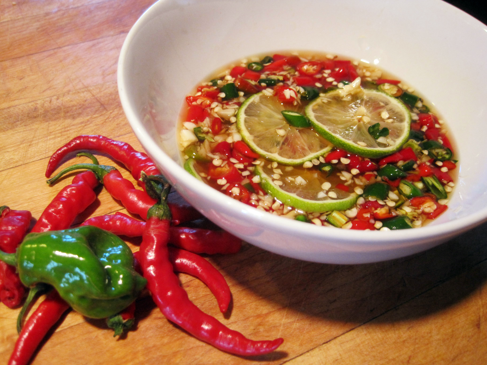
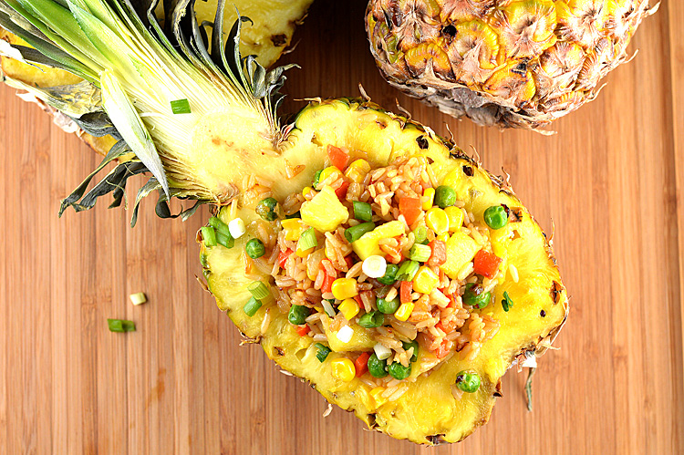

Better Than Fish Sauce
August 5th, 2015 | comments

In south east Asian cooking especially Thai and Vietnamese, fish sauce is widely used. In my experience I have used the special version of the fish sauce and had a better result of great & better tasting food! Today I am going to introduce you to the Nam Pla Prik aka "special fish sauce" . Please try this easy extra something and leave a comment how you like it!
- good quality fish sauce 2 T
- Thai chilli 1
- garlic
- sugar 1 t
- lime juice 1 t
Nam Pla Prik (The Special Fish Sauce)
- Chop garlic and chili into small pieces
- Combine all the ingredients together and mix well. You've got yourself the Nam Pla Prik!
Directions
Aom's Pineapple Fried Rice
August 6th, 2015 | comments

The traditional style of Thai fried rice does not have a lots of veggies in Pineapple Fried Rice. But I've been trying to add more variety of veggies to my diet. So here is my take to Lots of Veggies Pork Fried Rice
- pork
- Nam Pla Prik
- veggies
Lots of Veggies Pineapple Fried Rice
- Heat your wok with coconut oil using medium heat
- add beaten egg
- add one day old rice
Directions